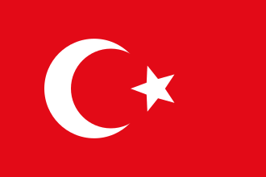
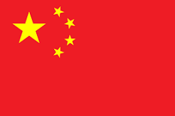

¿De qué se trató el Mundial de 2002?
La Copa Mundial de la FIFA 2002 fue la decimoséptima edición del torneo y se disputó de forma conjunta en Corea del Sur y Japón entre el 31 de mayo y el 30 de junio de 2002. Esta cita marcó un hito sin precedentes al tratarse de la primera Copa del Mundo celebrada en el continente asiático y la primera coorganizada por dos naciones en toda la historia de la competición. El evento estuvo impregnado de una atmósfera de altísima tecnología, estadios hipermodernos y un misticismo cultural que abrió una nueva era comercial para el fútbol en Oriente.
El campeonato estuvo marcado por hitos institucionales y deportivos de enorme calado. Se continuó utilizando el trofeo oficial estrenado en 1974: la Copa Mundial de la FIFA, diseñada por Silvio Gazzaniga. A nivel organizativo, aunque el certamen mantuvo el formato general de 32 selecciones, se implementó una restricción geográfica y logística inédita: cuatro grupos jugaron íntegramente en Corea del Sur y los otros cuatro en Japón, estructurando un cuadro de eliminación directa en el que las llaves no se cruzaron entre países hasta la gran final. Fue, además, la última edición en la que se utilizó la regla del "Gol de Oro".
En el plano futbolístico, el torneo fue testigo de la resurrección deportiva del delantero brasileño Ronaldo, quien venía de superar gravísimas lesiones de rodilla. La selección de Brasil, dirigida por Luiz Felipe Scolari, completó un torneo perfecto ganando sus siete partidos. En la gran final, disputada ante unos 69.000 espectadores en el Estadio Internacional de Yokohama, Brasil derrotó a Alemania por 2-0 gracias a un doblete de Ronaldo, quien batió al guardameta Oliver Kahn.
Informacion que tenes que saber
Info general
- Paises Anfitriones: Corea del Sur y Japón
- Fecha de Inicio:
31 de Mayo de 2002
(31/05/2002) - Fecha de Finalizacion:
30 de Junio de 2002
(30/06/2002) - Duracion: 30 dias
- Organizador: FIFA
- Edicion: XVII
Estadisticas
- Partidos jugados: 64
- Goles anotados: 161
- Promedio de gol: 2,52 por partido
- Máximo goleador:
Ronaldo (Brasil)
(8 goles) - Final:
Alemania 0 - 2 Brasil
info de la Ciudad
- Ciudades Sede: 20 (10 en Corea del Sur / 10 en Japón)
- Selecciones Participantes: 32
- Estadios Utilizados: 20
- Estadio Principal:
Estadio Internacional de Yokohama (Japón) - Asistencia total:
2.705.197 espectadores
Podio
| Posicion | Seleccion | Bandera |
|---|---|---|
| 1º Puesto | Brasil |  |
| 2º Puesto | Alemania |  |
| 3º Puesto | Corea del Sur |  |
| 4º Puesto | Turquía |  |
(Nota: El tercer puesto se definió en un partido entre Turquía y Corea del Sur. Turquía venció 3-2 a la coanfitriona surcoreana, cerrando el mejor mundial de su historia con el bronce).
Historia completa de la Copa Mundial de la FIFA 2002
La FIFA otorgó de manera salomónica la sede conjunta a Corea del Sur y Japón en mayo de 1996, luego de que ambas naciones mantuvieran una encarnizada disputa política y comercial por albergar el torneo de forma individual. El certamen contó con el debut absoluto de cuatro selecciones nacionales: Eslovenia, China, Ecuador y Senegal, siendo esta última la gran sensación al derrotar a Francia en la inauguración y alcanzar los cuartos de final emulando la gesta de Camerún en 1990.
La fase de grupos fue una de las más ricas en sorpresas de la historia moderna, atestiguando el colapso prematuro de tres de las grandes potencias candidatas al título: Francia (campeona defensora), Argentina y Portugal quedaron eliminadas en la primera fase. Por el contrario, la selección de los Estados Unidos sorprendió al mundo al avanzar a cuartos de final tras eliminar a México en octavos (2-0). Italia y España, dos colosos europeos, sufrieron eliminaciones traumáticas ante la coanfitriona Corea del Sur en partidos marcados por arbitrajes sumamente cuestionados por la prensa internacional.
Desarrollo del torneo
En las semifinales, el orden se restableció. Alemania, sostenida por las memorables actuaciones del arquero Oliver Kahn y un gol de Michael Ballack, derrotó 1-0 a la sorpresiva Corea del Sur en Seúl. Al mismo tiempo, en Saitama, Brasil superaba por el mismo marcador a la combativa Turquía con una genialidad de puntera de Ronaldo.
La gran final
La gran final unió por primera vez en la historia de los mundiales a las dos máximas potencias de la competición: Brasil y Alemania. El Estadio Internacional de Yokohama fue el escenario de un choque tenso. En la segunda mitad, un inusual error de Oliver Kahn al dejar muerto un rebote tras un disparo de Rivaldo permitió a Ronaldo abrir el marcador.
Minutos más tarde, el propio Ronaldo sentenció el partido con un disparo ajustado al poste izquierdo tras una finta magistral de Kleberson. Cafú hizo historia al convertirse en el primer futbolista en disputar tres finales consecutivas de la Copa del Mundo, alzando el trofeo al cielo de Japón.
Brasil consiguió así su quinto campeonato mundial ("Pentacampeonato"), consolidándose en solitario como la máxima potencia futbolística del planeta.
⚽ Pelota Oficial del Mundial 2002

ADIDAS FEVERNOVA
El Fevernova fue el balón oficial de la Copa Mundial de la FIFA Corea/Japón 2002, fabricado por la firma alemana Adidas. Supuso una ruptura radical con los diseños tradicionales basados en el formato del Tango, presentando una estética inspirada en la cultura asiática.
Información General
Nombre: Adidas Fevernova
Fabricante: Adidas (Alemania)
Material: Capas de espuma sintáctica refinada con microglóbulos llenos de gas altamente elásticos
Diseño: Estrella de tres puntas en tonos dorados, verdes y rojos que emulaban las llamas de fuego y la energía de los países anfitriones
Torneo: Copa Mundial FIFA Corea del Sur/Japón 2002
Características
- Ruptura radical con los diseños tradicionales del formato Tango.
- La capa de espuma sintáctica con microglóbulos de gas le otorgaba una trayectoria de vuelo espectacularmente rápida.
- Generó airadas quejas de los guardametas, quienes lo describieron como un balón "ingrávido" y difícil de atrapar.
- Su diseño incorporaba una estrella de tres puntas inspirada en la estética asiática.
- Representó un salto tecnológico y estético significativo respecto al Tricolore de 1998.
Dato curioso
El Fevernova fue uno de los balones más controvertidos entre los porteros de la historia mundialista. Su velocidad de salida y su trayectoria impredecible generaron un intenso debate sobre el equilibrio entre ataque y defensa en el fútbol moderno.
Selecciones Participantes
Europa
Alemania  Bélgica
Bélgica  Croacia
Croacia  Dinamarca
Dinamarca  Eslovenia
Eslovenia  España
España  Francia (Vigente campeón)
Francia (Vigente campeón)  Inglaterra
Inglaterra  Irlanda
Irlanda  Italia
Italia  Portugal
Portugal  Polonia
Polonia  Rusia
Rusia  Suecia
Suecia Debutantes notables
Eslovenia 
China Ecuador
Ecuador  Senegal
Senegal Sudamérica
 Argentina Brasil Ecuador
Argentina Brasil Ecuador  Paraguay
Paraguay  Uruguay
Uruguay Norteamérica, Centroamérica y Caribe
 Estados Unidos
Estados Unidos  México
México  Costa Rica
Costa Rica Asia
Corea del Sur (Anfitrión)  Japón (Anfitrión)
Japón (Anfitrión)  Arabia Saudita
Arabia Saudita África
 Camerún
Camerún  Nigeria Senegal
Nigeria Senegal  Sudáfrica
Sudáfrica  Túnez
Túnez
Sedes |
||||
|---|---|---|---|---|
|
El Mundial de 2002 se disputó en veinte ciudades sede y veinte estadios, repartidos en partes iguales entre Corea del Sur y Japón, todos ellos construidos o remodelados para ofrecer el máximo nivel de tecnología e infraestructura. El Estadio Internacional de Yokohama, en Japón, fue la sede principal del torneo, albergando la gran final entre Brasil y Alemania ante cerca de 69.000 espectadores. Las llaves de octavos y cuartos de final se disputaron de forma aislada dentro de cada país anfitrión. En total se jugaron 64 partidos repartidos entre los veinte estadios, con una asistencia total de 2.705.197 espectadores a lo largo de todo el campeonato. |
||||
| Nombre del Estadio | Ciudad | Capacidad aprox. | Partidos Jugados | |
Estadio Internacional de Yokohama |
Yokohama (Japón) | 72.300 | 4 | |
Estadio de la Copa Mundial de Daegu |
Daegu (Corea del Sur) | 66.000 | 4 | |
Estadio de la Copa Mundial de Seúl |
Seúl (Corea del Sur) | 64.000 | 3 | |
Saitama Stadium 2002 |
Saitama (Japón) | 63.700 | 4 | |
Estadio principal de Asiad de Busan |
Busan (Corea del Sur) | 54.500 | 3 | |
Shizuoka Stadium ECOPA |
Fukuroi (Japón) | 51.300 | 3 | |
YANMAR Stadium Nagai |
Osaka (Japón) | 50.000 | 3 | |
Estadio de la Copa Mundial de Incheon |
Incheon (Corea del Sur) | 49.000 | 3 | |
Miyagi Stadium |
Rifu (Japón) | 49.000 | 3 | |
Showa Denko Dome Ōita |
Oita (Japón) | 43.000 | 3 | |
Estadio de la Copa Mundial de Ulsan Munsu |
Ulsan (Corea del Sur) | 43.500 | 3 | |
Denka Big Swan Stadium |
Niigata (Japón) | 42.300 | 3 | |
NOEVIR Stadium Kobe |
Kobe (Japón) | 42.000 | 3 | |
Estadio de la Copa Mundial de Jeju |
Seogwipo (Corea del Sur) | 42.000 | 3 | |
Estadio de la Copa Mundial de Gwangju |
Gwangju (Corea del Sur) | 42.800 | 3 | |
Estadio de la Copa Mundial de Jeonju |
Jeonju (Corea del Sur) | 42.400 | 3 | |
Kashima Soccer Stadium |
Kashima (Japón) | 41.800 | 3 | |
Sapporo Dome |
Sapporo (Japón) | 41.500 | 3 | |
Estadio de la Copa Mundial de Suwon |
Suwon (Corea del Sur) | 43.000 | 3 | |
Estadio de la Copa Mundial de Daejeon |
Daejeon (Corea del Sur) | 40.500 | 3 | |
Arbitros de la Copa Mundial de la FIFA 2002 por pais
| Arbitros | Pais |
|---|---|
| Pierluigi Collina (Árbitro de la final) | |
| Byron Moreno | |
| Gamal Al-Ghandour |  |
| Hugh Dallas |  |
| Ali Bujsaim |  |
| Felipe Ramos Rizo | |
| Ángel Sánchez | |
| Jorge Larrionda | |
| German Carlos Batres |  |
| Kim Young-joo | |
| Markus Merk | |
| Gilles Veissière | |
| Brian Hall | |
Resumen del torneo — Copa Mundial de la FIFA 2002
Primera Fase de Grupos
Grupo A
- Dinamarca
- Senegal
- Uruguay
- Francia
Dinamarca clasificó primera del grupo. Senegal acompañó como gran sorpresa tras vencer a Francia en la inauguración. La campeona defensora cayó eliminada sin marcar un solo gol.
Grupo B
- España
- Paraguay
- Sudáfrica
- Eslovenia
España dominó el grupo con autoridad. Paraguay clasificó segunda dejando fuera a Sudáfrica por diferencia de gol. Eslovenia, en su debut, no logró sumar puntos.
Grupo C
- Brasil
- Turquía
- Costa Rica
- China
Brasil ganó sus tres partidos confirmándose como favorita. Turquía clasificó segunda. China, en su histórico debut, no sumó puntos.
Grupo D
- Corea del Sur
- Estados Unidos
- Portugal
- Polonia
La coanfitriona Corea del Sur sorprendió al ganar el grupo. Estados Unidos avanzó segunda, dejando eliminada a Portugal, una de las grandes candidatas al título.
Grupo E
- Alemania
- Irlanda
- Camerún
- Arabia Saudita
Alemania clasificó primera tras golear 8-0 a Arabia Saudita. Irlanda avanzó invicta como segunda de grupo.
Grupo F
- Inglaterra
- Suecia
- Argentina
- Nigeria
Argentina
0:1
Inglaterra
Inglaterra venció a Argentina con un gol de penal de David Beckham, resultado que terminó condenando a la albiceleste a la eliminación en primera fase.
Grupo G
- México
- Italia
- Croacia
- Ecuador
México clasificó primera del grupo. Italia avanzó segunda en un grupo muy disputado, dejando fuera a Croacia y a la debutante Ecuador.
Grupo H
- Japón
- Bélgica
- Rusia
- Túnez
La coanfitriona Japón ganó su grupo invicta por primera vez en su historia. Bélgica clasificó segunda, dejando fuera a Rusia y Túnez.
Fase de Eliminación Directa
Octavos de Final
- Alemania 1 - 0 Paraguay
- Inglaterra 3 - 0 Dinamarca
- Senegal 2 - 1 Suecia (Gol de Oro)
- España 1 - 1 Irlanda (España 3-2 pen.)
- Brasil 2 - 0 Bélgica
- Corea del Sur 2 - 1 Italia (Gol de Oro)
- Estados Unidos 2 - 0 México
- Turquía 1 - 0 Japón
Corea del Sur
2:1
Italia
El árbitro ecuatoriano Byron Moreno anuló un gol legítimo a Damiano Tommasi y expulsó a Francesco Totti por una supuesta simulación. Corea del Sur avanzó con un Gol de Oro de Ahn Jung-hwan, en uno de los partidos más polémicos de la historia mundialista.
Cuartos de Final
- Alemania 1 - 0 Estados Unidos
- Brasil 2 - 1 Inglaterra
- Corea del Sur 0 - 0 España (Corea del Sur 5-3 pen.)
- Turquía 1 - 0 Senegal (Gol de Oro)
Corea del Sur eliminó a España en los penaltis en medio de nuevas denuncias arbitrales, convirtiéndose en la primera selección asiática en alcanzar una semifinal mundialista.
Semifinales
Semifinal 1
Alemania
1:0
Corea del Sur
Un gol de Michael Ballack, sostenido por las memorables actuaciones del arquero Oliver Kahn, le dio el pase a Alemania ante la sorpresiva coanfitriona surcoreana.
Semifinal 2
Brasil
1:0
Turquía
Brasil superó a la combativa Turquía gracias a una genialidad de puntera de Ronaldo, sellando su pase a la octava final mundialista de su historia.
Partido por el Tercer Puesto
Turquía y Corea del Sur disputaron el partido por el tercer y cuarto puesto, tras ser eliminados en sus respectivas semifinales.
Corea del Sur
Gran Final
Finalistas
Alemania Grupo E Brasil Grupo CFinal
Alemania 0 Brasil 2(Doblete de Ronaldo, 67' y 79'. Un error de Oliver Kahn al rechazar un disparo de Rivaldo permitió el primer gol. Cafú se convirtió en el primer futbolista en disputar tres finales consecutivas.)
Máximos goleadores — Copa Mundial de la FIFA 2002
| Jugador | Goles | Pais |
|---|---|---|
| Ronaldo | 8 | |
| Miroslav Klose | 5 | |
| Rivaldo | 5 | |
| Jon Dahl Tomasson | 4 | |
| Christian Vieri | 4 | |
Equipo estelar — Copa Mundial de la FIFA 2002
Elegido por el Grupo de Estudios Técnicos de la FIFA, el equipo ideal reflejó el dominio de Brasil, campeón pentamundialista, junto al gran nivel mostrado por Alemania, Turquía, Corea del Sur, Inglaterra, España y Estados Unidos.
| Jugador | Posición | Pais |
|---|---|---|
| Oliver Kahn | Portero | |
| Rüştü Reçber | Portero | |
| Roberto Carlos | Defensa | |
| Sol Campbell | Defensa | |
| Hong Myung-bo | Defensa | |
| Alpay Özalan | Defensa | |
| Fernando Hierro | Defensa | |
| Rivaldo | Mediocampista | |
| Ronaldinho | Mediocampista | |
| Michael Ballack | Mediocampista | |
| Yoo Sang-chul | Mediocampista | |
| Claudio Reyna | Mediocampista | |
| Ronaldo | Delantero | |
| Miroslav Klose | Delantero | |
| El Hadji Diouf | Delantero | |
| Hasan Şaş | Delantero |
Premios Oficiales — Copa Mundial de la FIFA 2002
| Premio | Jugador | Pais |
|---|---|---|
| 🥇 Mejor Jugador (Balón de Oro) | Oliver Kahn (Único portero en ganarlo en la historia) | |
| ⚽ Ganador de la Bota de Oro | Ronaldo | |
| 🧤 Mejor Portero (Premio Lev Yashin) | Oliver Kahn | |
| 👶 Mejor Jugador Joven | Landon Donovan | |
| 🤝 Premio Fair Play | Selección de Bélgica | |
Controversias de la Copa Mundial de la FIFA 2002
Este torneo es catalogado unánimemente como uno de los más polémicos de todos los tiempos debido a actuaciones arbitrales que condicionaron de forma directa el destino de grandes potencias.
-
Corea del Sur - Italia: la noche de Byron Moreno
La controversia cumbre del torneo se vivió en los octavos de final entre la coanfitriona Corea del Sur e Italia en Daejeon. El árbitro ecuatoriano Byron Moreno firmó una actuación dantesca: anuló un gol legítimo a Damiano Tommasi por un fuera de juego inexistente, expulsó a Francesco Totti al interpretar como simulación un penalti claro, y permitió el juego extremadamente brusco de los locales. Corea del Sur avanzó con un Gol de Oro de Ahn Jung-hwan, desatando la furia institucional de Italia.
-
Corea del Sur - España: los goles fantasma de Gwangju
La polémica se recrudeció en los cuartos de final, donde Corea del Sur se midió ante España en Gwangju. El colegiado egipcio Gamal Al-Ghandour y sus asistentes invalidaron dos goles completamente legales al conjunto español, alegando erróneamente que el balón centrado por Joaquín había rebasado la línea de fondo antes del cabezazo de Fernando Morientes. España cayó en penaltis en medio de denuncias generalizadas de la prensa europea.
-
La simulación de Rivaldo ante Turquía
Otra gran controversia involucró al astro brasileño Rivaldo durante la fase de grupos ante Turquía. En los minutos finales, el defensor turco Hakan Ünsal le lanzó el balón con el pie para que cobrara un tiro de esquina; el esférico impactó en el muslo de Rivaldo, pero el brasileño se desplomó tapándose el rostro simulando una agresión en la cabeza. El árbitro expulsó erróneamente al jugador turco, y la FIFA multó posteriormente a Rivaldo por conducta antideportiva.
-
Las eliminaciones tempranas de las grandes potencias
La fase de grupos fue una de las más sorpresivas de la historia moderna: Francia (campeona defensora), Argentina y Portugal quedaron eliminadas en la primera fase, generando un intenso debate sobre el desgaste físico de las estrellas europeas tras temporadas extenuantes en sus clubes.
Identidad del Torneo: Diseño, Marketing, Medios y Legado
Mascotas Oficiales: "Los Spheriks"
Diseñados mediante animación tridimensional por computadora, "Los Spheriks" (Ato, Kaz y Nik) eran criaturas de energía futurista provenientes de una raza ficticia llamada "Atmozzone". Ato (el entrenador, de color amarillo) y Kaz y Nik (los jugadores, de colores morado y azul) eran practicantes del Atmoball, un deporte similar al fútbol.
Representaron la obsesión de Japón y Corea por el anime y el diseño futurista de inicios de los 2000. Protagonizaron su propia serie de televisión animada y una colosal gama de videojuegos, convirtiéndose en iconos de la cultura pop digital del torneo.
Canción Oficial: "Boom"
Interpretada por la cantante estadounidense Anastacia, con un sonido pop-rock enérgico muy característico de la época. Convivió de forma paralela con el himno oficial del torneo compuesto por el músico de vanguardia electrónica Vangelis, y con el éxito masivo en Latinoamérica de "Shimme Shake" de Eduardo Cruz.
Balón Oficial: Adidas Fevernova
Supuso una ruptura radical con los diseños tradicionales basados en el formato del Tango, presentando una estética inspirada en la cultura asiática, con una estrella de tres puntas en tonos dorados, verdes y rojos que emulaban las llamas de fuego y la energía de los países anfitriones.
La Revolución de la Inauguración
La ceremonia tuvo lugar el 31 de mayo de 2002 en el Estadio de la Copa Mundial de Seúl, previo al sorpresivo partido inaugural donde Senegal derrotó 1-0 a la campeona vigente, Francia. Titulada "Desde Oriente" y enfocada en la paz global y la reconciliación étnica, fusionó danzas chamánicas coreanas tradicionales con proyecciones de realidad aumentada e impresionantes coreografías de luces LED.
El clímax del evento mostró el tañido de una campana tradicional coreana recreada digitalmente en pantallas de agua gigantes, simbolizando la entrada del fútbol a la era digital del siglo XXI.
Impacto Socioeconómico en los Anfitriones
En Corea del Sur, el mundial funcionó como una plataforma de consolidación económica y orgullo nacional: el país construyó 10 estadios completamente nuevos desde los cimientos. El sorpresivo avance de la selección surcoreana hasta semifinales desató el fenómeno de los "Red Devils" (Diablos Rojos), movilizando a más de 7 millones de personas a las calles de Seúl y provocando un auge económico inmediato en el consumo interno, el turismo y la venta de tecnología coreana a nivel global.
En Japón, el certamen consolidó la modernización de los sistemas de transporte de alta velocidad (tren bala Shinkansen) y la conectividad digital. Aunque el impacto deportivo fue menor (Japón quedó eliminado en octavos de final), el mundial sirvió para reactivar la economía de prefecturas periféricas gracias a las colosales infraestructuras deportivas construidas, abriendo las puertas a la inversión y consumo de marcas occidentales en el mercado nipón.
El Legado del Torneo
El certamen dejó un legado transformador: fue la primera Copa del Mundo celebrada en Asia y la primera coorganizada por dos naciones, marcó la última edición con la regla del "Gol de Oro", consagró el regreso triunfal de Ronaldo tras superar gravísimas lesiones, y confirmó a Brasil como la máxima potencia futbolística del planeta con su quinto título mundial ("Pentacampeonato").
Tabla de Rendimiento y Posiciones Finales
| Posicion | Seleccion | Pts | PJ | PG | PE | PP | GF | GC | Dif | Rendimiento |
|---|---|---|---|---|---|---|---|---|---|---|
| 1 | Brasil |
21 | 7 | 7 | 0 | 0 | 18 | 4 | 14 | 100,0% |
| 2 | Alemania |
16 | 7 | 5 | 1 | 1 | 14 | 3 | 11 | 76,2% |
| 3 | Turquía | 13 | 7 | 4 | 1 | 2 | 10 | 6 | 4 | 61,9% |
| 4 | Corea del Sur |
11 | 7 | 3 | 2 | 2 | 8 | 6 | 2 | 52,4% |
| 5 | España |
11 | 5 | 3 | 2 | 0 | 10 | 5 | 5 | 73,3% |
| 6 | Inglaterra |
8 | 5 | 2 | 2 | 1 | 6 | 3 | 3 | 53,3% |
| 7 | Senegal |
8 | 5 | 2 | 2 | 1 | 7 | 6 | 1 | 53,3% |
| 8 | Estados Unidos |
7 | 5 | 2 | 1 | 2 | 7 | 7 | 0 | 50,0% |
| 9 | Japón |
7 | 4 | 2 | 1 | 1 | 5 | 3 | 2 | 58,3% |
| 10 | Dinamarca |
7 | 4 | 2 | 1 | 1 | 5 | 5 | 0 | 58,3% |
| 11 | México |
7 | 4 | 2 | 1 | 1 | 4 | 4 | 0 | 58,3% |
| 12 | Irlanda |
6 | 4 | 1 | 3 | 0 | 6 | 3 | 3 | 50,0% |
| 13 | Suecia |
5 | 4 | 1 | 2 | 1 | 5 | 5 | 0 | 41,7% |
| 14 | Bélgica |
5 | 4 | 1 | 2 | 1 | 6 | 7 | -1 | 41,7% |
| 15 | Italia |
4 | 4 | 1 | 1 | 2 | 5 | 5 | 0 | 33,3% |
| 16 | Paraguay |
4 | 4 | 1 | 1 | 2 | 6 | 7 | -1 | 33,3% |
| 17 | Sudáfrica |
4 | 3 | 1 | 1 | 1 | 5 | 5 | 0 | 44,4% |
| 18 | Argentina |
4 | 3 | 1 | 1 | 1 | 2 | 2 | 0 | 44,4% |
| 19 | Costa Rica |
4 | 3 | 1 | 1 | 1 | 5 | 6 | -1 | 44,4% |
| 20 | Camerún |
4 | 3 | 1 | 1 | 1 | 2 | 3 | -1 | 44,4% |
| 21 | Portugal |
3 | 3 | 1 | 0 | 2 | 6 | 4 | 2 | 33,3% |
| 22 | Rusia |
3 | 3 | 1 | 0 | 2 | 4 | 4 | 0 | 33,3% |
| 23 | Croacia |
3 | 3 | 1 | 0 | 2 | 2 | 3 | -1 | 33,3% |
| 24 | Ecuador |
3 | 3 | 1 | 0 | 2 | 2 | 4 | -2 | 33,3% |
| 25 | Polonia |
3 | 3 | 1 | 0 | 2 | 3 | 7 | -4 | 33,3% |
| 26 | Uruguay |
2 | 3 | 0 | 2 | 1 | 4 | 5 | -1 | 22,2% |
| 27 | Nigeria |
1 | 3 | 0 | 1 | 2 | 1 | 3 | -2 | 11,1% |
| 28 | Francia |
1 | 3 | 0 | 1 | 2 | 0 | 3 | -3 | 11,1% |
| 29 | Túnez |
1 | 3 | 0 | 1 | 2 | 1 | 5 | -4 | 11,1% |
| 30 | Eslovenia |
0 | 3 | 0 | 0 | 3 | 2 | 7 | -5 | 0,00% |
| 31 | China | 0 | 3 | 0 | 0 | 3 | 0 | 9 | -9 | 0,00% |
| 32 | Arabia Saudita |
0 | 3 | 0 | 0 | 3 | 0 | 12 | -12 | 0,00% |
- PTS: PUNTOS
- PJ: PARTIDOS JUGADOS
- PG: PARTIDOS GANADOS
- PE: PARTIDOS EMPATADOS
- PP: PARTIDOS PERDIDOS
- GF: GOLES A FAVOR
- GC: GOLES EN CONTRA
- DIF: DIFERENCIA DE GOL
- RENDIMIENTO: BASADA EN LA EFECTIVIDAD DE PARTIDOS (PG, PE, PP)